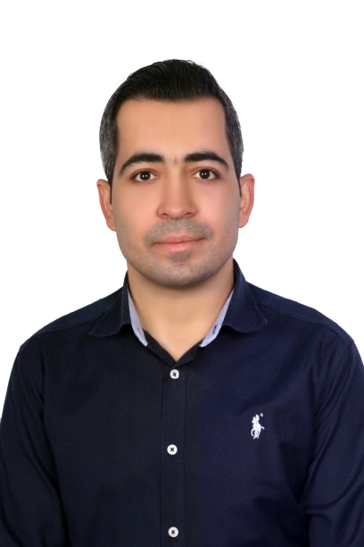

Full biography

I received my Ph.D. (2025) and M.Sc. (2013) degrees in Computer Engineering from Shahid Beheshti University (SBU), Tehran, Iran. My research lies at the intersection of Artificial Intelligence (AI), Internet of Things (IoT), data and process analytics, and intelligent cyber-physical systems. My work has covered multimodal sensing and data integration, Process Mining, machine learning, time-series analysis, Digital Twins, security and privacy, and the development of data-driven monitoring systems for applications including healthcare, intelligent transport, agriculture, and industrial systems. Since August 2026, I have been a Postdoctoral Researcher at the Faculty of Economics and Business (FEB), KU Leuven, Belgium.
From July 2024 to July 2026, I worked as a Postdoctoral Researcher at ICTEAM, UCLouvain, where my research focused on the robustness of Cyber-Physical Systems through machine-learning-based anomaly detection, time-series analysis, system modelling, and Digital Twins. Previously, I worked as a researcher at KU Leuven and as a Research Assistant and Visiting Researcher at the Chair of IT-Security at the University of Passau, Germany. I have also several years of experience in industrial R&D, research leadership, and university teaching. I received research scholarships from the German Academic Exchange Service (DAAD) and Iran's Ministry of Science, Research and Technology (MSRT), and have contributed to peer-reviewed publications, datasets, research projects, professional associations, conference organisation, technical program committees, and peer-review activities.
Email: